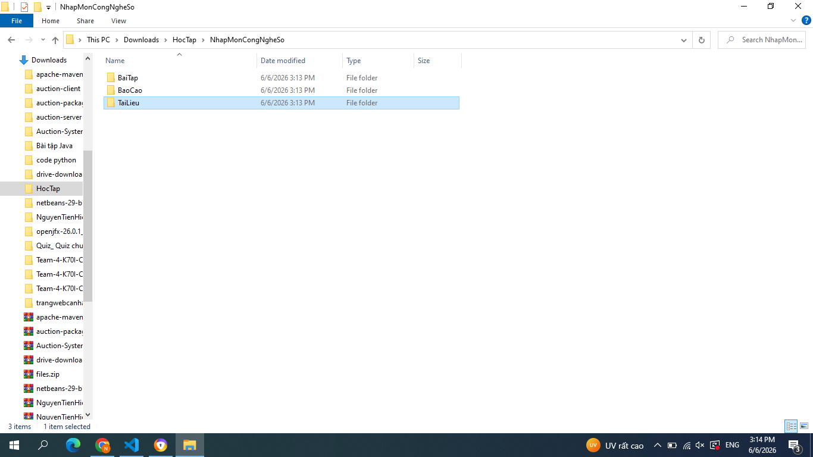
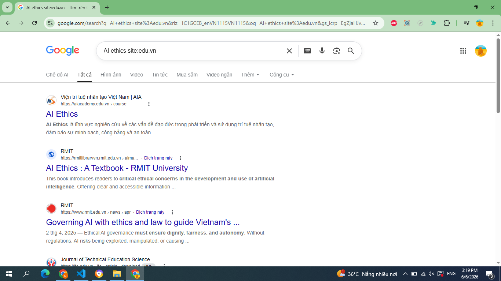
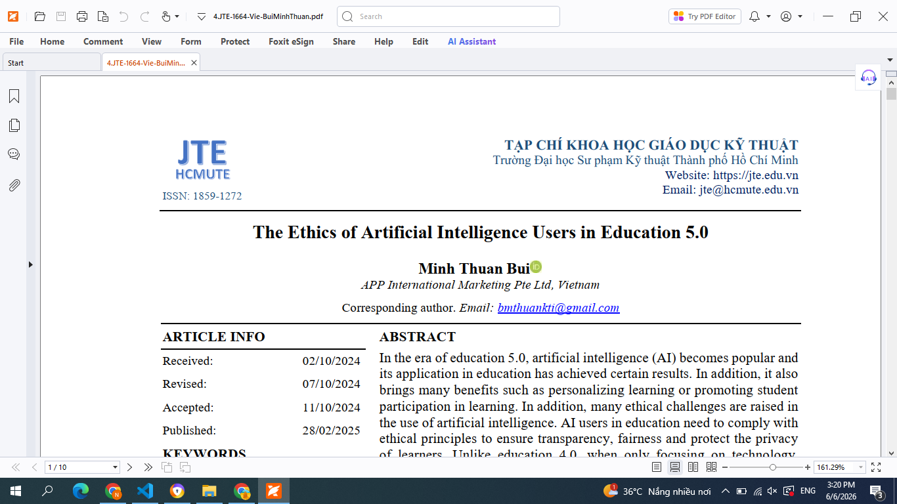
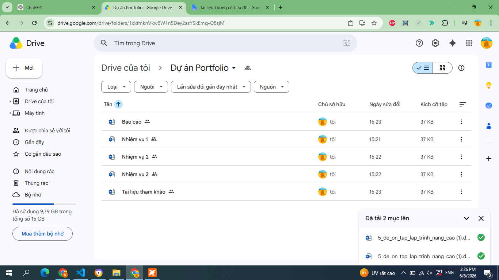
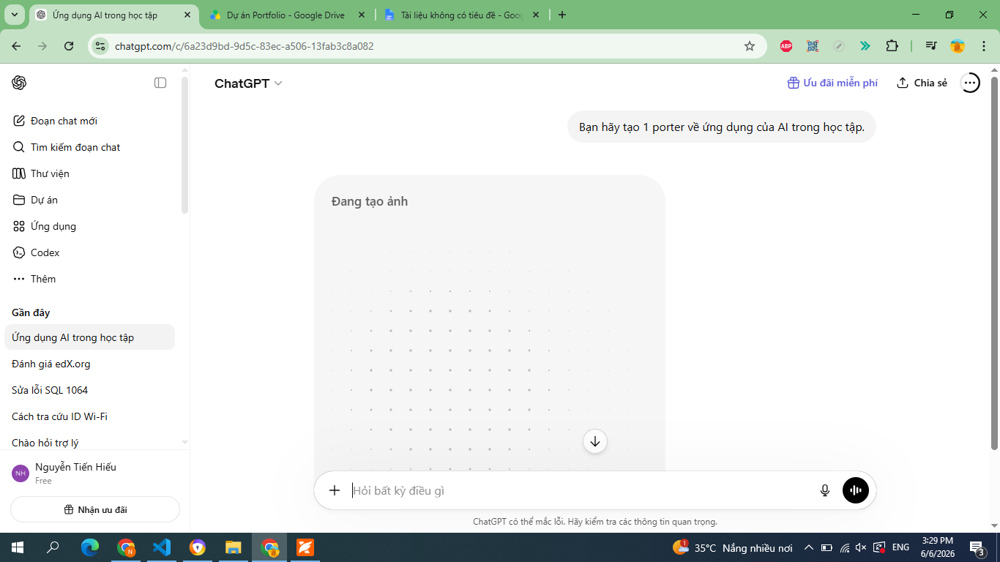
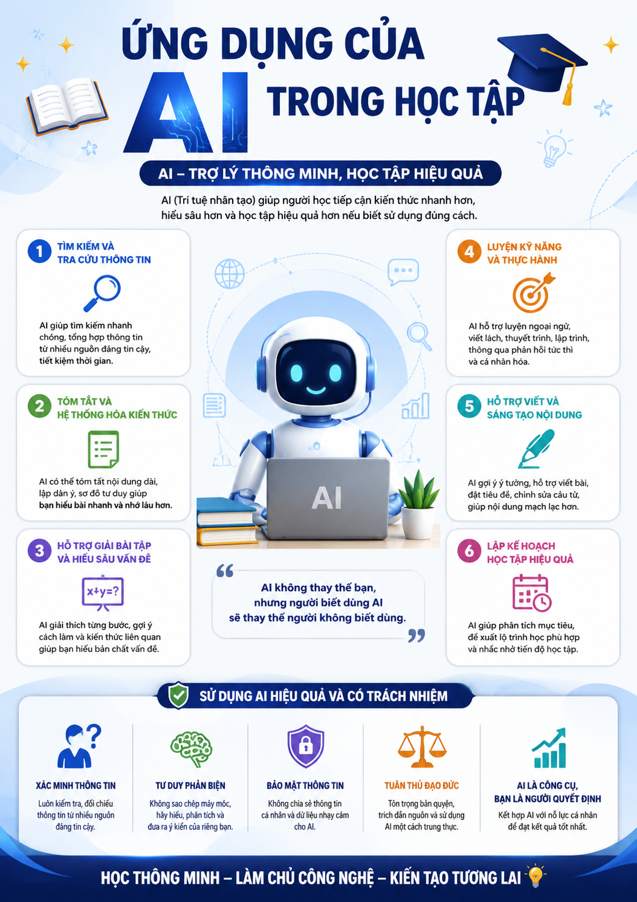

Môn Nhập môn Công nghệ số và Ứng dụng Trí tuệ nhân tạo
Họ và tên: Nguyễn Tiến Hiếu
Trường: Đại học Công nghệ - Đại học Quốc gia Hà Nội
Môn học: Nhập môn Công nghệ số và Ứng dụng Trí tuệ nhân tạo
Nâng cao kỹ năng sử dụng công nghệ số, tìm kiếm và đánh giá thông tin, ứng dụng trí tuệ nhân tạo một cách hiệu quả và có trách nhiệm trong học tập.
Portfolio này được xây dựng nhằm tổng hợp các bài tập đã thực hiện trong học phần, đồng thời thể hiện quá trình học tập và phát triển kỹ năng công nghệ số của bản thân.
Tôi xây dựng cấu trúc thư mục khoa học để quản lý tài liệu học tập.
Ảnh minh họa:

Sử dụng các toán tử tìm kiếm nâng cao để tìm nguồn thông tin học thuật.
Sau khi tìm kiếm, tôi đánh giá nguồn dựa trên độ tin cậy, tác giả và thời gian xuất bản.


Hãy viết bài về AI.
Bạn là chuyên gia AI. Hãy viết bài 500 từ giải thích AI cho sinh viên năm nhất, có ví dụ thực tế và kết luận.
Prompt cải tiến giúp AI tạo nội dung chính xác và đầy đủ hơn.
Nhóm sử dụng Google Drive và Trello để phân công công việc, theo dõi tiến độ và chia sẻ tài liệu.

Tôi sử dụng AI để hỗ trợ tạo nội dung số.


Thông qua dự án Portfolio này, tôi đã phát triển nhiều kỹ năng quan trọng như quản lý dữ liệu, tìm kiếm thông tin, viết prompt hiệu quả và sử dụng AI có trách nhiệm.
Kỹ năng tôi thấy hữu ích nhất là Prompt Engineering vì giúp khai thác AI hiệu quả hơn trong học tập và công việc.
Trong tương lai, tôi sẽ tiếp tục ứng dụng các kỹ năng này vào việc học tập, nghiên cứu và phát triển các dự án công nghệ.